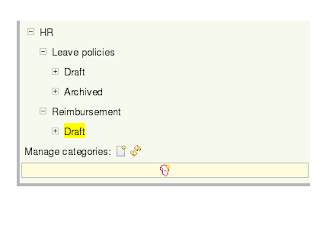
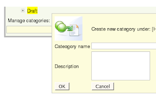

Relocation relocation & repository progress (Michael Neale)
Well I have had a great time in London, but it has gone fast. The entire purpose of this extended trip was to spend quality time with Mark so we could put our heads together and solve some of the hard design issues for the rules repository and version 3.2 (which who knows, may be called version 4?). I think we have achieved a lot.
So sad to be leaving, but also will be nice to be “home” again, still doing the same job of course ! (amazing how hard it is for people to understand that who have “real” jobs).
The rules repository has come along nicely (and we have of course been thinking about the often requested ability to package up process definitions a-la jBPM as well, but that’s another story).
So a quick update is in order I believe.
User driven categorisation is working out nicely:


The rule modeller (UI) mentioned before is also working out nice.
Of course, all the meaty stuff has been happening under the covers, so not much time to work on Look and Feel, but that should be changing shortly. Other rule authoring paradigms are plugging in as well. Of course, and it is all being integrated to work with the IDE tooling as much as possible.
Efficient versioning: Every save action in the repository is version ed. This (default) behavior may cause some alarm, due to the number of versions created. Thankfully, the concept of “workspaces” for storage means that the version storage can (if needed) be configured to be on a separate larger device/database to the main repository, allowing for huge rule bases to scale, very handy.
In other news, the “mvel” integration (a simple expression language) is coming along, and should be in the M1 release (more about that in another blog).
We also now have effective dating of rules, which is a handy (and often asked for feature, but often forgotten about-to-implement).
The next steps for the repository (which is as much a list to remind me after I get over the wicket jetlag that is about to hit):
* Archiving of rules (not as easy as it sounds, at least to make it usable).
* Audit logging and reporting (a lot of audit ability is intrinsic to the repository, but still, I have seen many an audit log grow unusable over time).
* Efficient introspection of the rule object model (as we are still pojo based, requires some magic)
* Keeping configuration options under control ;) want it to be as “out of the box” as possible and not terrify people with the possibilities !
* Version browser (started this on Friday, ran out of time !)
* Package management
– packages are sets of rules, which are “baseline” versioned for deployment. This will provide a more technical view of the rule assets in a tree structure (so you can view rules either via categories, or packages). Need to make this as intuitive as possible with sensible defaults.

{kind=link}
{kind=link}
{kind=link}